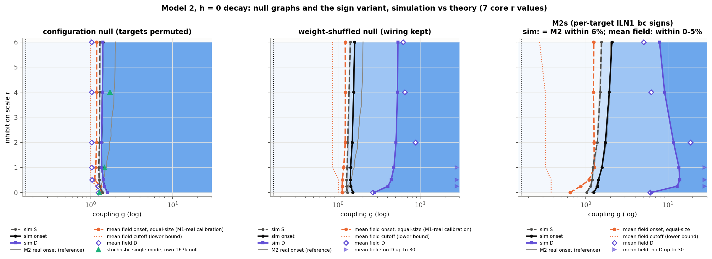
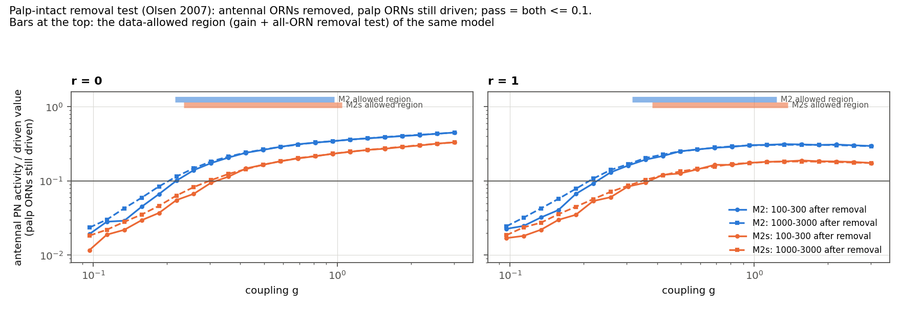
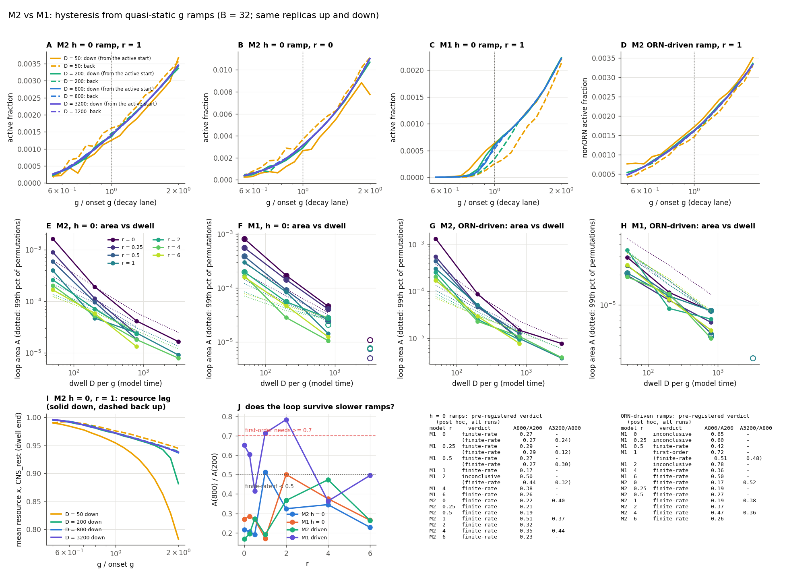
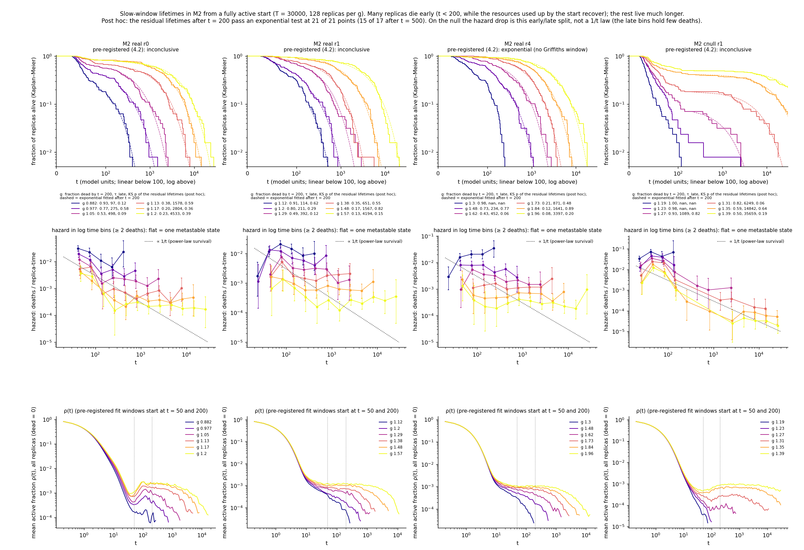

The phase diagrams, redone on the corrected model
You asked to restart all of the theory and experiment for the phase diagrams on the new model. Model 2 adds the two things section 12 of the notebook found missing: short-term depression at excitatory synapses, and spontaneous input from the olfactory receptor neurons (ORNs). Four simulation lanes and two theory lanes redid the work. A synthesis compared them. A verifier then recomputed the numbers from the raw files and reran 16 lines with new random seeds: all 16 replicated, and 9 statements were corrected. None of the corrections moves a boundary or changes a verdict. This page reports the corrected result.
Same phases, new place. At h = 0 the order is still Q → S → L → D at every r. The S line and the onset move up 3.4–4.8× in g, and the D line is now finite at every r. The first sustained state is now brain-wide: 13,600–19,100 neurons carry it and the antennal-lobe (AL) module holds only 5–6% of the activity (Model 1: about 1,000 neurons, 40–50% in the AL). g_lin = 0.1632 does not move, so the onset now sits 7–12× above it.
The driven diagram mirrors the h = 0 one. With the ORNs firing, activity outlives ORN removal exactly at the h = 0 onset (ratio 0.97–1.03 at all 23 r), and the range the data allow ends at the h = 0 S line (ratio 0.94–1.03).
No g passes every data test at r = 0 or 1. The PN gain test and the silence-after-removing-all-ORNs test pass from g = 0.216 (r = 0). The palps-intact test passes only below g ≈ 0.20. It is a near miss (7% in g), confirmed with 256 new replicas.
The transition is continuous and rounded, and nothing exotic appears. No first-order line, no coexisting states, no left/right symmetry breaking, no Griffiths window, and no self-organized criticality (0 critical-like points in either model).
Theory brackets the onset but does not hit it. No pre-registered point estimate of the h = 0 onset agrees at any r (mean field 0.53–0.80× the simulation, stochastic theory 1.41–2.28×), though both bound it. Under ORN drive at r = 0 the linear-noise theory gets the gain window and the fluctuation peak to within 2–9%.
The palp leak, the unmeasured LN→LN synapses, the choice of time unit, and theory with inhibition (section 9).
1What changed in the model, and why
Section 12 found that Model 1's self-sustaining antennal lobe is a defect of its synapse dynamics. Real projection neurons (PNs) are driven by the ORNs at rest and fall silent when the antennae are cut, and every measured excitatory AL synapse depresses strongly. Model 2 (M2) fixes both and changes nothing else: linear synapse counts, the released transmitter labels, the raw normalization, Δt, α and β all stay as in Model 1 (M1).
- Per-spike depression on excitatory outputs. Each cholinergic neuron j carries a resource xj (1 when rested). Each time j switches on it transmits with strength xj for that whole active bout, and xj drops by the fraction U = 0.25. Between switch-ons xj recovers toward 1 with time constant TAU = 157 model units. These are Nagel & Wilson 2016's ORN→LN values (75% kept per spike, 1.57 s recovery) at 10 ms per model unit. Inhibitory and modulatory outputs are not depressed.
- Spontaneous ORN drive. All 2,639 ORNs get h = 0.0379, which makes an isolated ORN active 4% of the time (3.6 Hz). Every other neuron has h = 0. Recurrent input lowers the real ORN rate at high g (0.030 at g = 1.5 and 0.024 at g = 3 in test runs at r = 1), so every gain uses the measured ORN rate.
Why the onset moves but g_lin does not. A fully rested neuron transmits at full strength, so the linear stability of silence is exactly as before: g_lin = 0.1632 (recomputed by the verifier to 0.1631526). Sustained activity is different. A neuron that fires keeps using up its resource, and its outputs weaken (an ORN at 4% activity sits at x ≈ 0.41). Active states therefore need much more coupling to keep themselves going. In the stochastic theory, depression divides the effective size of every eigenmode by 36.3. A small, tight module like the AL is hit hardest, which is why it no longer leads.
Variants run alongside. M2s adds per-target signs for the cholinergic lLN1_bc clique (onto PNs: 0, standing in for electrical coupling; onto LNs: +1). M1s is that sign fix without depression. Sensitivity runs: depression on every synapse, the KW09 and N15 depression values, TAU = 30 (a 50 ms time unit), and ORN levels 0.01–0.10. Full spec: results/m2/MODEL2.md.
Drawn to scale from results/m2/decay/tables.md (M1 lines from analysis2, M2 lines from the decay lane) and results/m2/driven/table.md (allowed ranges at ORN level 0.04). Q quiescent, S slow window, L sustained and localized, D delocalized (glossary).
2Two settings, two sets of phase names
With ORN drive, silence is no longer absorbing, so the old lifetime test cannot be used directly. The program therefore draws two diagrams over (g, r):
Setting (a): h = 0, fully active start
- Exactly the Model 1 protocol and thresholds, so the two models compare directly.
- Q: mean lifetime τ < 200. S: 200 ≤ τ < 3000 (the slow window). L: sustained to T = 3000 and localized (participation ratio PR < N/4). D: sustained and delocalized (PR ≥ N/4).
- An oscillation flag (O) marks quasi-stationary states whose activity rings.
Setting (b): ORNs driven, then removed
- Quiet start, ORN level 0.04 for 1,500 units (15 s), then every ORN is clamped off for 3,000 units, as in an antenna removal.
- DQ: PNs barely respond (gain G < 0.29) and fall silent after removal. DA: realistic gain, silent after removal. DT: activity outlives removal by more than 200 units but dies within 3,000. SS-L / SS-D: activity survives removal, localized or delocalized.
- Data-allowed region: G between 0.29 and 1.45 (PNs at 1–5 Hz for ORNs at 3.44 Hz) and PNs silent after removal.
3The phase diagram at h = 0, with theory overlaid
![Left: the Model 2 phase diagram at h = 0 on a log coupling axis from about 0.2 to 30 and inhibition r from 0 to 6. Quiescent up to the simulated S line near g = 1 to 1.6, slow window to the onset at 1.18 to 2.02, localized sustained region to the D line, delocalized beyond. The D line runs from 6.3 at r = 0 out to about 14 at r = 0.5 to 1 and back to 8 at r = 6. Theory curves: mean-field equal-size onset near g = 0.6 to 1.2, mean-field cutoff near 0.25 to 0.33, the mean-field AL-chain band hugging the simulated onset, stochastic single-mode onset from 1.66 at r = 0 to 4.6 at r = 6, stochastic pooled below the onset. Right: theory divided by simulation for the onset against r, with a grey band of plus or minus 10 percent; only the mean-field AL-chain adiabatic curve lies near 1.](figs/m2/final_decay.png)
figs/m2/final_decay.png from code/m2_synth_figs.py.| r | S | Onset [interval] | D | MF onset | Stoch. onset | MF D |
|---|---|---|---|---|---|---|
| 0 | 0.981 | 1.18 [1.17–1.20] | 6.29 | 0.63 | 1.66 | 6.08 |
| 0.25 | 1.10 | 1.33 [1.30–1.36] | 13.1 | 0.83 | 1.87 | none ≤ 30 |
| 0.5 | 1.18 | 1.43 [1.40–1.46] | 14.1 | 1.05 | 2.08 | none ≤ 30 |
| 1 | 1.21 | 1.57 [1.54–1.60] | 13.9 | 1.23 | 2.49 | none ≤ 30 |
| 2 | 1.34 | 1.72 [1.70–1.75] | 11.9 | 1.22 | 3.09 | 19.6 |
| 4 | 1.47 | 1.94 [1.91–1.97] | 9.29 | 1.20 | 3.97 | 6.38 |
| 6 | 1.56 | 2.02 [1.99–2.10] | 8.03 | 1.21 | 4.60 | 5.22 |
Couplings g at each boundary, 7 of the 23 simulated r. MF onset = mean field's equal-size rule; Stoch. onset = single renormalized mode (M1-calibrated inhibition for r > 0). Simulation: results/m2/decay/tables.md; theory: results/m2/synth/agreement.csv.
- Order and width. Q → S → L → D at every r. The slow window is narrow: onset/S = 1.20–1.33. The L phase now ends at a finite D line at every r (6.29 at r = 0, about 14 at r = 0.25–1.25, 8.03 at r = 6). In Model 1, D was not reached up to g = 30 for r = 1.75, 2, 3, 4 and 6, and was not tested beyond g = 2.6 at the other r ≥ 2.25.
- Where the activity lives. At the first sustained g, 13,600–19,100 neurons carry it, mostly central-brain and VNC intrinsic neurons; descending neurons are enriched 5.6–8.8× and VNC motor neurons 9–10×. The AL module carries 5.0–6.3%. The D line is where the optic lobes join in.
- The real brain is no longer easier to ignite than a random one. The configuration null (targets permuted) switches on at 1.37–1.61 and delocalizes at its onset, as in Model 1. The real onset is 0.73× the null's at r = 0 (0.742 on a second null graph) but 1.15–1.42× above it for r ≥ 1. In Model 1 the real onset was 0.3–0.5× the null's. The weight-shuffled null switches on at 1.41–1.59 with D at 2.8–5.4.
- Variants. M2s lies within 6% of M2 on every line, with 4.4–5.1% of activity in the AL. M1s (sign fix without depression) is still AL-led (43–50%), so depression does the work. Onsets relative to M2 at r = 0, 1, 4: KW09 1.16–1.41×, N15 0.73–0.85×, all-synapse depression 0.87–1.02×, TAU 30 0.49–0.71× (AL 12–18%). None is AL-led.

figs/m2/final_decay_nulls.png.4The phase diagram with ORN drive, with theory overlaid
![Top: the Model 2 driven phase map at ORN level 0.04 over coupling g from 0.05 to 30 and r from 0 to 6, with phases DQ, DA, DT, SS-L and SS-D, a hatched data-allowed region from the G = 0.29 line (0.22 at r = 0 to 0.47 at r = 6) up to about the h = 0 S line, the DT to SS line lying on the h = 0 onset markers, and the SS-D line near g = 6 to 14. Mean-field G = 0.29 line bends outward between r = 1 and 3. Bottom left: PN/ORN gain against g for r = 0, 1, 4 with simulation dots, mean-field dashed lines and the linear-noise curve. Bottom middle: fluctuation (Fano) and autocorrelation time against g at r = 0, simulation and linear-noise theory, peaking near g = 0.7 to 1.0. Bottom right: data-allowed bars for M1, M2 and M2s at the core r values.](figs/m2/final_driven.png)
figs/m2/final_driven.png.| r | DQ→DA | Data-allowed | DT→SS | h = 0 onset | SS-L→SS-D | MF DQ→DA | M1 allowed |
|---|---|---|---|---|---|---|---|
| 0 | 0.216 | 0.216–0.968 | 1.21 | 1.18 | 6.25 | 0.213 | 0.092–0.215 |
| 0.25 | 0.241 | 0.241–1.08 | 1.32 | 1.33 | 12.8 | 0.240 | 0.097–0.230 |
| 0.5 | 0.267 | 0.267–1.13 | 1.43 | 1.43 | 13.9 | 0.279 | 0.101–0.248 |
| 1 | 0.317 | 0.317–1.23 | 1.57 | 1.57 | 13.9 | 0.415 | 0.114–0.279 |
| 2 | 0.400 | 0.400–1.37 | 1.73 | 1.72 | 12.0 | 0.892 | 0.132–0.306 |
| 4 | 0.463 | 0.463–1.48 | 1.95 | 1.94 | 9.43 | 0.537 | 0.164–0.340 |
| 6 | 0.474 | 0.474–1.57 | 2.07 | 2.02 | 8.20 | 0.466 | 0.187–0.382 |
ORN level 0.04, 64 runs per point; 494 GPU runs and 4,036 driven points in all. Data-allowed = gain and all-ORN removal tests (no palp test). Sources: results/m2/driven/table.md (sections A1, A2), results/m2/synth/agreement.csv.
- Same phase order at every r: DQ → DA → DT → SS-L → SS-D. The allowed region's top is where PNs stop falling silent after removal, which is the h = 0 S line (ratio 0.94–1.03). Activity survives removal exactly at the h = 0 onset (ratio 0.97–1.03). So the driven diagram is the h = 0 diagram seen through an antenna removal.
- No fluctuation peak marks a transition. The pre-registered test was negative: no susceptibility or fluctuation peak tracks g_lin, DT→SS or any h = 0 line. The autocorrelation time peaks at g = 0.69–0.96, which is 0.40–0.61× DT→SS, and the weight-shuffled null has the same peak. The AL fluctuation measure is a broad plateau. Model 1's sharp AL peak sat at 0.55–0.66× its own SS line.
- Depression, not input, sets the driven level. The log–log slope of driven activity against the ORN input actually transmitted falls below 0.5 from g = 0.19–0.29 on (1.2–1.8× g_lin), so over most of the allowed region the activity follows depression more than input. This was a post hoc analysis.
- More ORN drive shrinks the allowed region. At ORN level 0.10 there is none for r ≥ 1, because the gain reaches 0.29 only where PNs no longer fall silent.
- Nulls. The configuration null has no allowed region at any r tested. The weight-shuffled null, which keeps the ORN→PN wiring, has a small one at r = 0 (0.84–1.15) and r = 0.25 (1.01–1.15), and none for r ≥ 0.5.
- Oscillation flags: 14 of 4,036 driven points, none strong.

figs/m2/driven_palp.png; reruns results/m2/verify/reruns.json.5How well the theory did
Two theory lanes wrote predictions before the comparison. Neither was blind, though: both had read the one-paragraph summaries of the experiment lanes in STATE.md. The stochastic lane said so; the mean-field lane did not. Their point estimates of the onset failed anyway, so that exposure produced no agreement.
Mean field ("meanfield" lane)
- Each neuron's activity and resource, averaged exactly over the per-spike depression; inhibition cancels only coincident excitation (CQMF).
- Gives fixed points, oscillations, the driven gain and a D line. An h = 0 onset needs a rule of thumb: the "equal-size" rule says activity sustains once its active core is as large as at Model 1's onset (about 106 neurons). It was labelled heuristic and expected to come out low.
Stochastic theory ("stochastic" lane)
- Depression shrinks every mode's effective size by 1 + κ = 36.3. A two-variable (activity, resource) birth–death chain gives lifetimes: the single leading mode is an upper estimate, the pooled state a lower one. Inhibition at r > 0 uses a factor calibrated on Model 1.
- Under drive: a linear-noise approximation (LNA) of the driven state, with no r-dependence at first order.
![Three panels of theory divided by simulation against r, with a grey band for plus or minus 10 percent. (a) h = 0 S and onset: mean-field equal-size 0.53 to 0.80, stochastic single mode 1.2 to 2.3, mean-field AL chain adiabatic near 0.9 to 1.0. (b) h = 0 D line: mean field near 1 at r = 0, 2.5 and 2.75, high at r = 0.125 and 1.75 to 2.25, open triangles where it has no D up to g = 30, 0.65 to 0.81 at r of 3 and above. (c) Driven lines: mean-field G = 0.29 near 1 at small and large r and up to 2.5 at r = 1.75, removal line 0.53 to 0.81, allowed top 0.6 to 1.0, LNA G = 0.29 at 0.98 at r = 0 and 0.45 to 0.67 above.](figs/m2/final_agreement.png)
figs/m2/final_agreement.png; every row in results/m2/synth/agreement.csv.| Prediction | Mean field | Stochastic theory | Simulation |
|---|---|---|---|
| h = 0 boundaries (real connectome) | |||
| Onset, point estimate | fails 23/23 0.53–0.80× | fails 1.41× at r = 0; 1.41–2.28× for r > 0 | 1.18–2.02 |
| S line, point estimate | fails 23/23 0.58–0.79× | fails 1.20× at r = 0; 1.20–1.98× for r > 0 | 0.98–1.57 |
| Onset bracket | holds 23/23 [cutoff, AL chain frozen], 8.4–16.5× wide | holds 7/7 [pooled, single], 2.0–3.7× wide | |
| AL-mode chain, adiabatic (meant as an upper bound) | close, wrong side within 10% at 16/23 r, but below the simulation at 21/23 | ||
| r-trend, onset(r = 6) / onset(r = 0) | agrees 1.93 | fails 2.77 | 1.71 |
| D line | fails 20/23 agrees at r = 0, 2.5, 2.75; none ≤ 30 at r = 0.25–1.5; 1.33–2.36× at r = 0.125, 1.75–2.25; 0.65–0.81× at r ≥ 3 | not predicted | 6.29–14.2 |
| Where activity lives at the simulated onset (PR, AL share within 2×) | agrees | agrees PR 15,500, AL 5.2% | PR 13,600–19,100, AL 5.0–6.3% |
| Configuration-null onset | fails 7/7 0.78–0.90× | agrees 5/6 own null graphs, 5k–167k neurons (±15%) | full size 1.37–1.61; at r = 0 from 3.73 (5k) to 1.60 (167k) |
| Real onset vs null onset | wrong at r = 0 predicted 1.30×; right direction at r ≥ 1 (predicted 1.30–2.28×) | 0.73–0.74× at r = 0 (two null graphs), 1.15–1.42× at r ≥ 1 | |
| Modules alone, r = 0 | 3 of 6 agree AL 2.08, left lobe and OL 5.22 agree; right lobe, CB 1.67 and VNC 24 fail | AL 2.19, OL 5.00, CB 1.42, VNC 3.36 | |
| ORN-driven lines (level 0.04) | |||
| DQ→DA (gain 0.29) | agrees 10/23 r ≤ 0.625 and r ≥ 4.5; up to 2.5× off at r = 1.75 | agrees at r = 0 0.213; fails at r ≥ 1 (0.45–0.67×) | 0.216 (r = 0) to 0.474 |
| Top of the gain window (G = 1.45), r = 0 | agrees 1.03 | 1.05 | |
| DT→SS (activity survives removal) | fails 23/23 0.53–0.81× | not predicted | 1.21–2.07 |
| Top of the allowed region | fails 16/23 agrees at 7 r; 0.61–0.99× | 0.968–1.57 | |
| Fluctuation (Fano) peak, r = 0 | agrees 59 at g = 0.91 | 55 at g = 0.99 | |
| Autocorrelation-time peak, r = 0 | height agrees, place fails 11.0 at 0.65; at r = 1, 4 the height is 2.0–2.3× too high | 10.1 at 0.74 | |
| AL Fano peak, r = 0 | height agrees, place fails 2.20 at 0.39 | 2.19 at 0.47 | |
| What kind of transition | |||
| Bistability, coexisting states | agrees none | agrees one fixed point from 6 starts | one state in all 168 cells tested |
| Left/right symmetry breaking | agrees none | 0 of 220 points | |
| Oscillations | half right none at r = 0 (right); large slow oscillations for r > 0 from g ≈ 1.0–1.6 (not seen) | agrees damped noise quasi-cycle, never strong | damped quasi-cycles at r = 0 only |
| Driven branching ratio | agrees max 0.948 per unit | max 0.942 per unit | |
| Self-organized criticality (pulse avalanches) | agrees never critical-like on the real graph | 0 critical-like points | |
| Lifetimes in the slow window | agrees early deaths, then exponential | early deaths, then exponential | |
| Depression variants (onset relative to M2) | direction only KW09 1.51, N15 0.62, TAU 30 0.35 | 1.16–1.41, 0.73–0.85, 0.49–0.71 | |
Ratios are theory ÷ simulation. "Agrees" means inside the simulated interval or within ±10% (±20% for the r-trend, ±15% for the finite-size nulls). Sources: results/m2/synth/agreement.json (tally, trend, where-at-onset), results/m2/theory/stochastic.md sec. 11, results/m2/theory/meanfield_predictions.json, corrections in results/m2/verify/corrections.json (items 2, 3, 8).
6What kind of transition is it?
Four tests were pre-registered: finite-size scaling of the onset, hysteresis under slow ramps of g, lifetimes in the slow window, and oscillations. A fifth, the module phases of de Candia et al., came from the module lane.
![Nine panels of finite-size scaling. Top row: crossover width W = ln(onset/S) against network size N from 5,000 to 167,216 for r = 0, 1, 4; configuration nulls fall from about 0.27 to 0.14 at r = 0 and from 0.45 to 0.08 at r = 1; real uniform subsamples fall slowly from 0.30 to 0.19 at r = 0. Middle row: onset coupling against N; nulls fall toward 1.4 to 1.6, real subsamples fall steeply from 4.4 at 20,000 neurons to 1.18 for the full brain at r = 0. Bottom row: lifetime curves sharpening with N for nulls and real subsamples at r = 1, and the size scaling of fluctuation amplitude.](figs/m2/nature_fss.png)
figs/m2/nature_fss.png; numbers results/m2/nature/fss.json, recomputed in results/m2/verify/verify.json.- Nulls sharpen. W(167k)/W(5k) = 0.168 at r = 1 and 0.187 at r = 4: the transition gets sharper as the network grows. At r = 0 the ratio is 0.50, right at the pre-registered cut; a bootstrap over the three null graphs per size gives [0.47, 0.55], so pass or fail cannot be decided. W is flat for N ≥ 40k there (0.143, 0.148, 0.136). Null onsets fall toward the null's own g_lin, and the active fraction at onset falls as N grows: a continuous, strongly rounded transition.
- The real brain drifts. Uniform real subsamples narrow only slowly, roughly as N−0.2 (W 0.30 → 0.19 at r = 0, 0.39 → 0.26 at r = 1, 0.42 → 0.28 at r = 4, from 20k to the full brain), while the onset moves from 4.4 down to 1.18 (r = 0). That is neither sharpening nor a fixed width, so the pre-registered verdict is "inconclusive / drifting". In Model 1 the real onset was pinned by one module: the AL alone matched the whole brain to 1.8%. In Model 2 no module pins it.

figs/m2/nature_hysteresis.png; results/m2/nature/hyst.json.- No first-order hysteresis. All 14 Model 2 ramps (h = 0 and ORN-driven, 7 r each) are finite-rate effects. Loops shrink 11–90× from dwell 50 to 800 and reach the noise floor by 800–3,200. Driven ramps show no bimodal states. The one Model 1 case that tripped the rule (driven, r = 1) was noise: two extra seeds gave p = 0.74 and 0.57, and dwell 3,200 made it finite-rate.
- No coexisting states and no left/right symmetry breaking. Starts from all-active, quiet and partial states end in one cluster in all 96 h = 0 and 72 driven cells. No broken-symmetry point among 220 testable ones for the AL lobes and hemispheres, in M1, M2, M2s and M2 with TAU 30.

figs/m2/decay_lifetimes.png; results/m2/decay/lifetimes.json.- Griffiths. Exponential tails mean one metastable state dying at random, not a spread of rare regions. The pre-registered verdict was "exponential" at r = 4 and "inconclusive" at r = 0, 1 and the null because of the early deaths; separating early and late deaths (post hoc) resolves it. This is the same answer as Model 1, now without even the single AL rare region.
- Oscillations are damped noise, not a phase. On the real M2 graph, the oscillation flag fires only at r = 0, g = 1.15–1.31 (0.97–1.11× the onset), with period 73–83 units (0.73–0.83 s at 10 ms per unit). The flags are threshold-marginal: autocorrelation peaks of 0.10–0.15 against a threshold of 0.10. The one "strong" flag (7 runs) disappears with a different estimator. Uniform real subsamples give variance ∝ N−1.19, the signature of a noise-driven quasi-cycle; subsamples that keep the AL give −0.03 and +0.34, but they over-couple the AL 2–4×. Model 1 has no oscillation flags at all.
- Module phases (de Candia). At the first sustained g, 31 of the 34 modules are on (≥ 1% occupancy) at r = 0 and 4 at r = 6; in Model 1 it was always 3, the AL. Half the modules switch on within 1.0–1.4× the onset (Model 1: 1.7–3.0×). Every partial start, even a 221-neuron island or 1% of random neurons, survives like the all-active start. Cut out and simulated alone at r = 0, the AL needs g = 2.19, the central brain 1.42, the VNC 3.36 and the optic lobes 5.0, against 1.18 for the whole brain: no part sustains itself alone at the brain's onset.
7Does depression make the brain self-organize to criticality?
Levina, Herrmann & Geisel (2007) showed that depressing synapses can tune a network to critical avalanches over a wide range of coupling. Model 2 has exactly that ingredient, so the program tested it with a pre-registered rule. In the pulse protocol (h = 0, one ORN kicked whenever the network falls silent), a coupling counts as critical-like if the avalanche-size exponent lies in 1.3–1.7 with a good power-law fit (KS ≤ 0.03, at least 1,000 avalanches in the tail, sizes spanning 100×). The Levina picture would be supported if Model 2's critical-like couplings spanned ≥ 1.5× in g while Model 1's spanned < 1.2×.
![Avalanche statistics. Size distributions for Model 2 and Model 1 at r = 1 against a slope of minus 3/2; Model 2 develops a bump of very large avalanches near the onset. Fitted size exponents cross the 1.3 to 1.7 band at low g, but the goodness-of-fit KS values stay above the 0.03 line there. Mean avalanche size rises toward the onset. Branching ratio per model time unit rises to at most about 0.97 in Model 2. The size-duration exponent gamma sits near 2 while the crackling prediction is 2.4 to 2.8. The ORN-driven branching ratio peaks at 0.94 per unit at r = 0 and lower for larger r.](figs/m2/nature_avalanches.png)
figs/m2/nature_avalanches.png; results/m2/nature/aval.json, driven_branch.json.- Zero critical-like points in either model, in all 21 cells (7 r × 3 pulse gaps). By the pre-registered rule the Levina test is therefore "inconclusive", since the rule needs at least one model to show critical-like points. In plain terms: there is no sign of self-organized criticality.
- Near misses explained. The fitted exponent passes through 1.3–1.7 at 0.16–0.32× the onset, but the fits fail (KS 0.031–0.080). From 0.5–0.68× the onset a bump of very large avalanches appears: population bursts, not scale-free cascades. The size–duration exponent is 1.96–2.24, while the crackling relation from the fitted exponents predicts 2.36–2.77, so the exponents are not mutually consistent.
- Branching ratio. In the pulse protocol it peaks at 0.977 per model time unit in Model 2, lower than Model 1's 0.992; depression does not push it toward 1. Under ORN drive the maximum is 0.942 per unit, which is 0.988 per simulation step. The pre-registered marker |1 − m| < 0.01 is missed by a wide margin per unit and by only 0.002 per step, so the statement depends on the time base. Either way there is no stretch of g with m ≈ 1.
- The theory expected this. The stochastic lane predicted that the real graph never becomes critical-like, because depression confines the pulse response to a small AL-localized mode, which cuts any power law off at sizes of about 60–95. It also predicted critical-like avalanches on the configuration null (g = 0.91–3.0). That second prediction was not simulated.
8Old model vs new
![Four panels. (a) Model 1 phase diagram at h = 0: S and onset near g = 0.23 to 0.58, D from 1.5 at r = 0 rising beyond 30 at r of 1.75 and above. (b) Model 2: S and onset near g = 1 to 2, D from 6.3 at r = 0 out to 14 and back to 8 at r = 6, with Model 1's onset drawn for scale. (c) AL-module share of the first sustained state: about 45 to 50 percent in M1 and M1s, about 5 to 6 percent in M2 and M2s; inset: about 1,000 neurons carry it in M1 against 13,000 to 19,000 in M2. (d) ORN-driven data-allowed regions: M1 roughly 0.09 to 0.38 and M2 roughly 0.22 to 1.6, each ending below its own DT to SS line.](figs/m2/final_m1_vs_m2.png)
figs/m2/final_m1_vs_m2.png.| Question | Model 1 (old) | Model 2 (new) |
|---|---|---|
| Linear instability of silence, g_lin | 0.1632 | 0.1632 (unchanged) |
| h = 0 S / onset / D at r = 0 | 0.234 / 0.266 / 1.47 | 0.981 / 1.18 / 6.29 |
| Same at r = 1 | 0.283 / 0.344 / 14.5 | 1.21 / 1.57 / 13.9 |
| Same at r = 6 | 0.436 / 0.579 / none ≤ 30 | 1.56 / 2.02 / 8.03 |
| Onset relative to the other model | — | 3.4–4.8× Model 1's |
| Who sustains first | The AL module: 40–50% of activity, about 1,000 neurons | Brain-wide: AL 5–6%, 13,600–19,100 neurons, mostly central brain and VNC |
| Modules on at the first sustained g (of 34) | 3 (the AL) | 31 (r = 0) down to 4 (r = 6) |
| Real onset vs configuration null | 0.3–0.5× (real ignites far earlier) | 0.74× at r = 0, 1.15–1.42× at r ≥ 1 |
| The AL simulated alone | Same onset as the whole brain (within 1.8%) | Needs 2.19 vs 1.18 (r = 0); nothing sustains alone |
| de Candia-style phases | SL → metastable AL → AL-only (B1-like) → island cascade → D (r ≤ 1.5) | SL → slow window → brain-wide L → D at every r; under drive only the AL lobes are on below DT→SS |
| Finite-size behaviour of the onset | Fixed width, set by one module (K ≈ 70 at r = 0) | Width drifts slowly (about N−0.2); inconclusive |
| First-order lines, coexistence, L/R breaking | None | None |
| Griffiths window | No; one rare region (the AL) with exponential lifetimes | No; early deaths, then exponential |
| Oscillations | None flagged | Damped quasi-cycles at r = 0 near the onset only |
| Critical-like avalanches | 0 points | 0 points |
| Data-allowed g at ORN 0.04 (r = 0; r = 1) | 0.092–0.215; 0.114–0.279 | 0.216–0.968; 0.317–1.23 |
| Top of that range ÷ own h = 0 onset (r = 0; r = 1) | 0.81; 0.81 | 0.82; 0.79 |
| Palps-intact test | Passes in part of the range (up to g ≈ 0.17–0.19) | Fails everywhere in the range at r = 0 and 1 (limit ≈ 0.20, gain edge 0.216) |
| Best theory | Spectral onset theory, 5–9% at r = 0; overstates inhibition (1.8× at r = 1) | Brackets only at h = 0; LNA within 2–9% under drive at r = 0 |
Model 1 sources: results/analysis2/phase_complete.md, results/pd3/REPORT.md, results/aldef/REPORT.md. Model 2 sources: the lane files named in sections 3–7. The "top ÷ onset" row is computed here from the two tables above (0.215/0.266, 0.279/0.344, 0.968/1.18, 1.234/1.571).
![Four heat maps of how many of the 34 modules are on (at least 1 percent occupancy) over coupling g and inhibition r. Model 1 at h = 0: a few modules switch on just right of the onset line near g = 0.3 and the count grows gradually up to g of several. Model 2 at h = 0: nothing until the onset near g = 1.2 to 2, then nearly all modules within a short stretch of g. With ORN drive: in Model 1 one to three modules are on from g = 0.1 on; in Model 2 one to three modules (the AL lobes) are on from about 0.25 until the DT to SS line, then nearly all.](figs/m2/modules_phase_map.png)
figs/m2/modules_phase_map.png; results/m2/modules/key_numbers.json.9Open problems
- The palp leak. The palps-intact failure at r = 0 is firm but small: a late residual of 0.114 against a 0.10 threshold, with the palp limit 7% below the gain edge. The verdict depends on the 10% convention. The leak points at excitation onto PNs that is too strong; the real eLN→PN coupling is electrical, which no variant models fully (M2s only halves the leak).
- Unmeasured synapses. lLN1_bc onto lLN1_bc (42% of the old leading eigenvalue) and LN→LN depression have never been measured. Facilitation, electrical coupling, adaptation and neuromodulation are not in the model.
- The time unit. With a 50 ms unit (TAU 30) the onset drops to 0.49–0.71× and the AL holds 12–18% of the onset activity. Conclusions about how AL-led the onset is depend on this mapping.
- Theory with inhibition. No theory places the h = 0 onset. The mean field's D line errs in opposite directions at small and large r, and its oscillating regime for r > 0 is not seen in simulation. The LNA has no r-dependence.
- Finite size of the real brain. The real graph's crossover width drifts as about N−0.2. Other subsample families, or larger synthetic graphs that keep the module structure, would be needed to say whether it sharpens.
- Estimators to fix before reuse. The oscillation flag counts depend on the autocorrelation estimator (9 vs 7 real points), and the branching-ratio marker on its time base (per unit or per step). Both should be fixed in the spec before they are used again.
- Not independently recomputed. The verifier did not recompute the autocorrelation-peak locations, avalanche exponents and KS values, the left/right counts, the multistability clusters, or the theory internals beyond their prediction files. These rest on the lane files and the synthesis recheck.
- Untested prediction. The stochastic theory's critical-like avalanches on the configuration null (g = 0.91–3.0) were not simulated.
- The original question. Neither model has a Griffiths phase, so the hypothesis linking a Griffiths phase to wakefulness has no model here to test it in.
10Glossary
Terms from the notebook's glossary (eigenvector, IPR, rare region, Griffiths phase, null model) are not repeated. Couplings g are dimensionless; one model time unit is taken as 10 ms.
Models and parameters
- M1, M2
- Model 1, the original stochastic Wilson–Cowan model on the connectome. Model 2, the same plus per-spike depression on excitatory outputs and spontaneous ORN drive.
- M2s, M1s
- M2 or M1 with per-target signs for lLN1_bc: 0 onto PNs (a stand-in for electrical coupling), +1 onto LNs.
- g, r, h
- Global coupling; inhibition strength relative to excitation (inhibitory sign −r); external drive. In M2, h is 0.0379 on ORNs and 0 elsewhere, except in the h = 0 setting.
- g_lin
- The coupling where silence first becomes linearly unstable, 0.1632. Depression leaves it unchanged because a rested neuron transmits at full strength.
- Resource x, U, TAU
- A neuron's available transmitter (1 when rested); the fraction used per switch-on (0.25); the recovery time (157 units = 1.57 s).
- ORN level
- The activity an ORN would have on its own under its drive (0.04 = 3.6 Hz). Recurrent input lowers the measured rate.
- KW09, N15, TAU 30, all-synapse
- Sensitivity variants: Kazama & Wilson 2009 values (U 0.28, TAU 240); Nagel et al. 2015 values (U 0.22, TAU 89); a 50 ms time unit; depression on every synapse, inhibitory ones included.
Phases at h = 0 (setting a)
- Q, quiescent
- Activity from a fully active start dies with mean lifetime τ < 200 units.
- S, slow window
- 200 ≤ τ < 3000: activity lingers but dies within the run.
- L, localized sustained
- Survives to T = 3000 and is carried by fewer than a quarter of the neurons (PR < N/4). In M2 "localized" still means 13,600–19,100 neurons.
- D, delocalized
- Survives and is spread over at least a quarter of the neurons (PR ≥ N/4).
- Onset
- The S → L boundary, where the mean lifetime reaches 3,000.
- O, oscillation flag
- The activity's autocorrelation has a trough ≤ −0.10 and a later peak ≥ 0.10 within a period of at most 375 units. "Strong" if C(2P)/C(P) ≥ 0.7.
- Quasi-cycle
- Damped ringing kept alive by noise. Its amplitude shrinks as 1/√N; a true oscillation's does not.
Phases with ORN drive (setting b)
- Gain G
- Antennal PN activity divided by measured ORN activity. 0.29–1.45 means PNs at 1–5 Hz for ORNs at 3.44 Hz.
- Removal
- At t = 1,500 every ORN is clamped off; τpost is how long non-ORN activity then survives.
- DQ, driven-quiet
- G < 0.29 and silent after removal.
- DA, driven-amplifying
- G ≥ 0.29 and silent after removal: τpost < 200, PNs below 10% of their driven level 100–300 units after removal, and at most 3 of 64 runs with AL activity at the end.
- DT, driven-transient
- Activity outlives removal by more than 200 units but dies within 3,000.
- SS-L, SS-D
- Activity survives removal (τpost ≥ 3,000), localized or delocalized over the non-ORN neurons.
- -O, -D, -NS
- Modifiers on any driven phase: oscillation flag, delocalized, not stationary.
- Data-allowed region
- 0.29 ≤ G ≤ 1.45, PNs silent after all ORNs are removed, and at most 3 of 64 runs with AL activity at the end.
- Palps-intact test
- Remove only the antennal ORNs and keep the palp ORNs driven, as in Olsen et al. 2007. Passes if antennal PNs fall below 10% of their driven level, early (100–300 units) and late (1,000–3,000).
Tests of the transition
- Crossover width W
- ln(onset/S). A true phase transition makes W shrink toward 0 as the network grows.
- FSS
- Finite-size scaling: repeat the measurement on smaller graphs (random nulls, or uniform subsamples of the real brain) and watch how it changes with size N.
- Finite-rate hysteresis
- A loop between the up and down ramps that shrinks as the ramp slows. A first-order transition would keep its loop.
- Module on
- One of the 34 spectral modules (from the pd3 partition) with at least 1% occupancy.
- SL, B1, SH
- de Candia et al.'s phases: all modules silent; one module on; all modules on.
- Avalanche
- In the pulse protocol, a run of consecutive steps with any activity; its size is the number of switch-ons.
- Critical-like
- Size exponent 1.3–1.7 with KS ≤ 0.03, at least 1,000 tail avalanches, and sizes spanning 100×.
- Branching ratio m
- Expected switch-ons caused per switch-on (multistep regression). m = 1 is critical. Per model time unit = (per step)5.
- Crackling relation
- At criticality the size–duration exponent equals (τT − 1)/(τS − 1). A mismatch means the power laws are not one critical family.
- LHG test
- The Levina–Herrmann–Geisel 2007 check: do depressing synapses widen the range of critical-like couplings?
- CQMF, equal-size rule
- The mean-field closure used here, and its heuristic for the h = 0 onset (see section 5).
- Single mode, pooled, LNA
- The stochastic theory's upper and lower lifetime estimates, and its linear-noise approximation of the driven state.